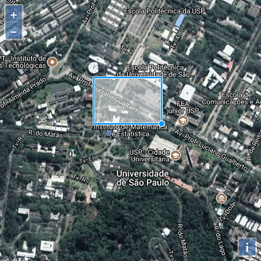
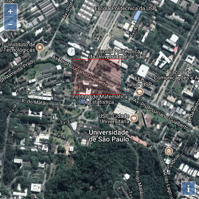
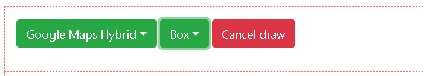

Click at Get Images to start collecting the images for the selected region.

Images are being retrieved for streets collected through OpenStreetMap.

Contents:
INACITY have two modes of use, a simple mode and an advanced one. In the former you can choose a region by clicking at two different locations over the map to select a region:
1. The first click selects the starting point for the region of interest.
2. A second click selects the region of interest, denoted by a reddish area.
After selecting the region of interest just press Get Images. The platform will collect all the streets and their images and display it:
Click at Get Images to start collecting the images for the selected region.
Images are being retrieved for streets collected through OpenStreetMap.
By default the shape tool selected is the box. The user can select other shapes by clicking at the shape button:
By default the box shape is selected.
Clicking over the shape button reveals all possible shapes.

Currently there are 3 shapes: